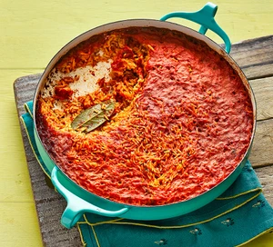

Jollof Rice

Description
Jollof rice is a vibrant and flavorful West African dish that has
captured the hearts and palates of people across the continent and
beyond. This one-pot wonder features rice cooked in a rich tomato
sauce infused with a medley of aromatic spices, onions, and peppers.
Often enriched with vegetables and a choice of proteins such as chicken,
beef, or fish, jollof rice is celebrated for its bold, savory taste and
tantalizing aroma. Each bite offers a harmonious blend of ingredients,
making it a beloved staple at gatherings, celebrations, and everyday
meals. With its origins rooted in the Senegambian region, jollof rice
has become a symbol of cultural pride and culinary excellence, enjoyed
and adapted by various West African countries, each adding their unique
twist to this delectable dish.
Ingredients
- 400g basmati rice
- 3 red peppers, halved and deseeded
- 1 white onion, halved
- 2 garlic cloves
- 1 tbsp grated ginger, or ginger purée
- 1 Scotch bonnet chilli, deseeded if you prefer less heat (optional)
- 5 tbsp vegetable or sunflower oil
- 100g tomato purée
- 2 bay leaves
- 1 tbsp dried thyme
- 2tsp curry powder (we used hot madras)
- ½ tsp ground white pepper
- 600ml hot chicken stock, made with 2 stock cubes
Steps
-
Heat the oven to 200C/180C fan/gas 6. Tip the rice in a sieve,
rinse under cold water, drain and set aside. Put the peppers,
onion, garlic, ginger and chilli, if using, in a food processor
and blitz until chopped.
-
Heat the oil in an ovenproof casserole over a medium heat and
fry the tomato purée for 2-3 mins, stirring often. Add the blitzed
pepper mixture and fry for 5 mins more, then add the herbs, spices
and 1 tsp salt. Fry for a further 1-2 mins, then stir in the rice to
coat. Pour in the stock, stir, cover and bake for 45 mins until the
rice is tender.
-
Pour the oil into a deep, wide pan like a wok, or heat a deep-fat
fryer to 180C. If using a pan or wok, ensure that it is no more than
two-thirds full with oil. Heat the oil until it is shimmering and
carefully lower in the chips using a slotted spoon. Fry for 8-10 mins,
gently stirring occasionally until golden and crisp. Transfer to
kitchen paper to drain.